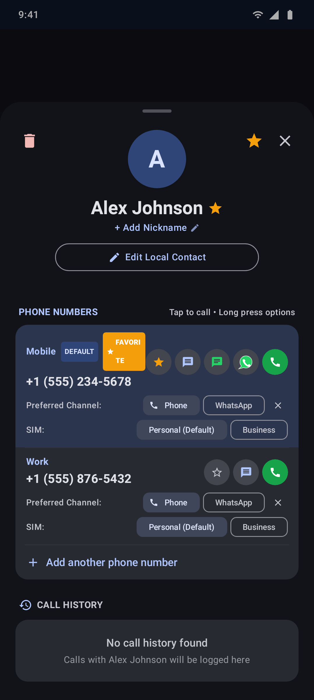
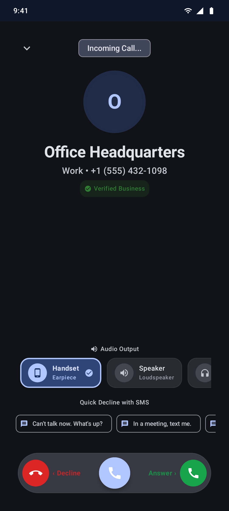
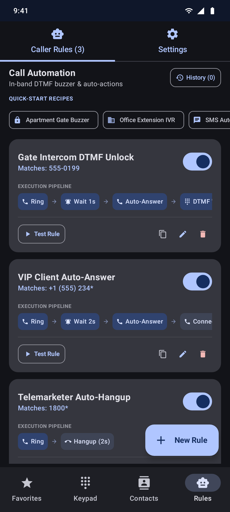
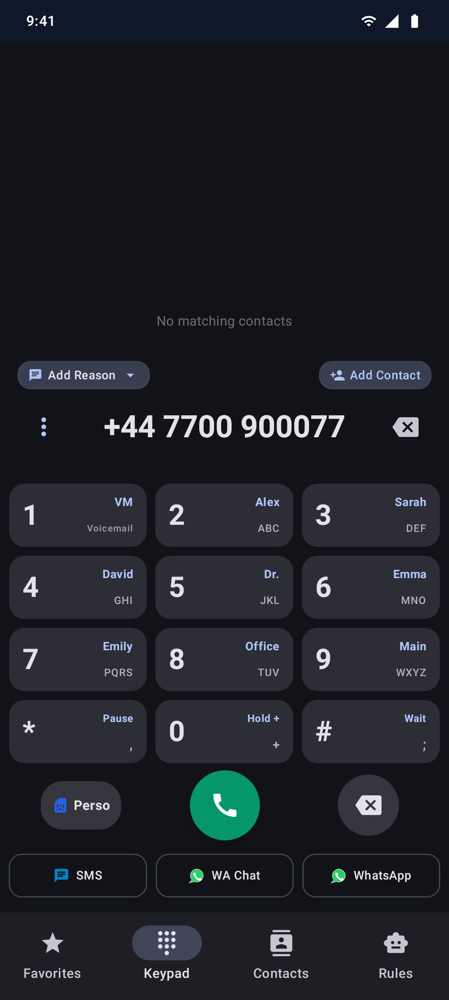
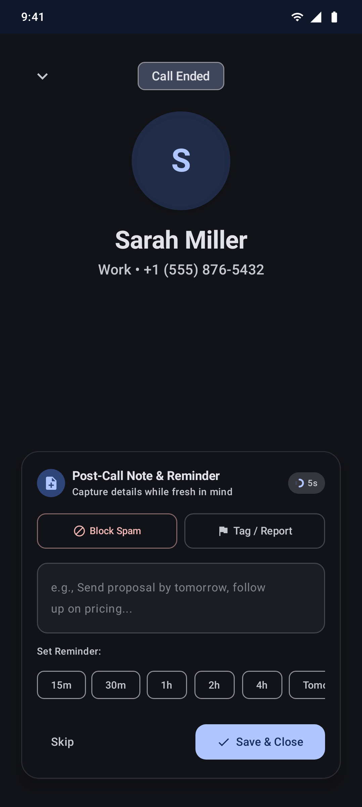

Unified Voice & Messaging
The OmniDial Experience
The intelligent Android dialer that adapts to how you communicate. Seamlessly unify Cellular & WhatsApp calling, automate gate buzzers, route dual-SIM numbers, and screen spam.
Experience the Interface
Built exclusively for Android with Jetpack Compose & Material Design 3. Tap any screen to inspect full resolution.


OmniDial vs. Standard Dialers
See how OmniDial compares to stock Android phone apps and Truecaller.
| Capability / Feature | Stock Dialer (Google / Samsung) |
Truecaller | OmniDial (All Features Included) |
|---|---|---|---|
| Dual-Channel Calling (Cellular + WhatsApp) Seamlessly route calls over standard carrier GSM or WhatsApp voice | ❌ No | ⚠️ Manual only | ✅ Native & Automated |
| Car & Wearable WhatsApp Redirection Android Auto, car head units, and smartwatches auto-route to WhatsApp | ❌ No | ❌ No | ✅ Automated via Telecom |
| Pre-Answer Audio Route Selector Pick Handset, Speaker, or Bluetooth device BEFORE picking up | ❌ No | ❌ No | ✅ In-Call HUD |
| Gate / Intercom Auto-Answer & DTMF Buzzer Auto-answers apartment gates, sends touch tone (e.g. 9#), and hangs up | ❌ No | ❌ No | ✅ Dedicated Rule Engine |
| Quick Actions for Unsaved Numbers Call, SMS, WhatsApp Chat, or WhatsApp Call for any unsaved number directly from keypad | ❌ Call only | ⚠️ Limited | ✅ Instant 4-Action Hub |
| Per-Number SIM Routing & Roaming Guard Designate SIM 1 / SIM 2 per number; avoid roaming bill-shocks automatically | ⚠️ Manual prompt | ⚠️ Basic | ✅ Auto Roaming Avoidance |
| Post-Call Notes & Scheduled Reminders Capture key takeaways instantly after hangup with scheduled notification alarms | ❌ No | ❌ No | ✅ Post-Call Action Sheet |
| Smart Screen-Off Ear Detection Turns off screen near ear; keeps awake intelligently on speaker or Bluetooth | ⚠️ Basic | ⚠️ Basic | ✅ Route-Aware Sensor |
| Cryptographic Tamper-Proof Local Backup One-tap JSON export and restore with SHA-256 cryptographic verification | ⚠️ Cloud backup | ⚠️ Cloud backup | ✅ SHA-256 Verified JSON |
Unique Capabilities & Architectural Innovations
Built for users who demand power, precision, and streamlined communication from their Android dialer. Tap any screen mockup to inspect.
Multi-Channel Calling Engine & Keypad Dock
Unify all your available calling paths into one seamless interface. Effortlessly route calls through SIM 1, SIM 2, or WhatsApp Voice directly from the Keypad Channel Dock, with granular per-number preferences and unified call confirmation dialogs.
- Dynamic Keypad Channel Dock: Instant 1-tap switching between cellular SIMs and WhatsApp above the dial pad with real-time carrier names and roaming tags.
- Unified Call Choice Dialogs: Elegant channel picker when calling multi-channel contacts, with "Remember choice" toggle for automated 1-tap dialing.
- Per-Number Preferred Channel & SIM: Bind specific phone numbers to designated SIM cards or WhatsApp directly within contact sheets.
- Car & Wearable Redirection: Android Auto and Bluetooth hands-free systems automatically route through your contact's preferred calling channel.

Pre-Answer Audio Route Selector
Take complete command of where sound goes before accepting an incoming call. Never accidentally blast a private conversation on speakerphone in public or scramble to pair a headset mid-sentence.
- Pre-Answer Audio HUD: Select Handset (earpiece), Speaker, or Bluetooth device right on the incoming ring screen.
- Instant Device Switching: Seamless handoff to AirPods, Galaxy Buds, hearing aids, or vehicle dashboards.
- Trust Badges & SMS Decline: Verified Business badges and one-tap quick decline SMS options.

Automated Gate & Intercom Buzzer Rules
A dedicated automation engine tailored for apartment buzzers, community gates, delivery intercoms, and automated call handling. Program numbers to auto-answer, transmit touch-tone unlock sequences, and hang up.
- Auto-Answer Delay: Answers gate calls automatically after a configured delay (e.g. 1 second).
- Automated DTMF Key Sequence: Transmits touch tones (e.g.
9#or*#) to buzz open the door. - Auto-Hangup: Ends the call automatically after unlocking without touching the screen.

Quick Actions for Unsaved Numbers
Dial any number—delivery couriers, temporary service contractors, or overseas inquiries not in your contacts—and immediately access an all-in-one 4-action communication hub without polluting your phonebook.
- 4 Instant Actions: Regular Phone Call, Send SMS Text, WhatsApp Chat, or WhatsApp Voice Call.
- No Address Book Clutter: Message or VoIP-call anyone on WhatsApp without saving them as a contact.
- Country Prefix Awareness: Smart dialing formats international numbers cleanly.

Post-Call Notes & Scheduled Reminders
Never forget a task or key discussion point. Immediately upon call completion, OmniDial presents an unintrusive note sheet to capture takeaways while fresh and schedule callback reminder notifications.
- Instant Post-Call Sheet: Quick note entry appears right after hanging up.
- 1-Tap Reminder Presets: Schedule callback reminders for 15m, 30m, 1h, 2h, 4h, or Tomorrow.
- Persistent Log Attachments: Notes remain permanently attached to call history records with one-tap callbacks.

Dual-SIM Intelligence & Roaming Guard
Master multi-SIM devices with intelligent global policies, proactive roaming notifications, and real-time carrier bill-shock protection during international travel.
- 3 Smart SIM Modes: System default, Ask & Learn per-contact, or International custom routing.
- Roaming Cost Alerts: Warns when placing cellular calls on active roaming networks to prevent unexpected fees.
- Call Log SIM Badges: Visual SIM badges displayed directly on past call history entries.
Smart Screen-Off Ear Detection
Intelligent route-aware proximity screen control that turns off the display when held to your ear, preventing accidental cheek presses or muted calls.
- Route-Aware Proximity Off: Disables screen when held to ear; keeps screen awake when on speakerphone or Bluetooth.
- Automatic Sensor Re-engagement: Re-engages automatically if audio switches from hands-free back to the handset earpiece.
STIR/SHAKEN Spam Defense & Screening
Detect carrier spoofing, warn against fraudulent callers, and automatically screen telemarketers before your phone rings.
- STIR/SHAKEN Verification: Warns when caller ID authentication fails due to carrier spoofing.
- Tiered Caller Trust Badges: Visual trust ratings for Verified Business, Delivery Couriers, and High-Risk Spam.
- Auto-Block Presets: Pre-emptively drops persistent robocallers and suspicious incoming patterns.
Cryptographic One-Tap Verified Backup
Easily protect and migrate your dialer configurations, caller rules, custom favorite grids, and speed dial shortcuts across Android devices.
- 1-Tap Local Backup: Exports all preferences to clean JSON without navigating confusing folder pickers.
- SHA-256 Checksums: Cryptographic integrity validation ensures backup files are untampered and uncorrupted.
- Smooth Device Migration: Rapidly restore your personalized setup when upgrading to a new phone.
Pause (,) & Wait (;) IVR Touch-Tone Dialing
Navigate complex automated phone trees, corporate extension directories, and conference dial-ins effortlessly with standardized pause syntax.
- Quick Key Shortcuts: Long-press
*for a 2-second Pause (,) and#for a Wait (;). - Automated Tree Navigation: Dial extensions, PIN codes, and meeting IDs automatically without manual re-entry.
Discovery Filters & Deep Search
Surfacing the right person at the right time with smart discovery categories and lightning-fast predictive indexing.
- Rediscover Dormant Contacts: Instantly highlights friends and colleagues you haven't contacted in over 60 days.
- Zero-Lag T9 Search: Matches full names, initials, nicknames, and digits in real time as you type.
Release Notes & Version History
Review change logs and download current or prior releases for your Android device.
OmniDial v2.0.0
Latest Release
▼
Build 19 • Released September 2026
- Dynamic Keypad Calling Dock: Instantly switch between SIM 1, SIM 2, and WhatsApp directly above the dial pad with real-time carrier names and roaming indicators.
- Unified Call Choice & Remembered Preferences: Clean selection dialog when calling contacts with multiple channels, with a "Remember choice" option for automated 1-tap future dials.
- Blazing Fast Search: Keypad T9 and contact search optimized to under 16ms response time for completely fluid, lag-free keystroke matching.
- Transactional Backup & Live Progress: Data backup and restore now runs in atomic batches with live progress indicators and SHA-256 verification.
Full Version History
Every prior release, newest first — rendered from the maintained release notes.
Browse all releases →How to Install OmniDial on Android
Download APK
Tap the download button above on your Android device and confirm the browser download.
Install App
Open the downloaded APK from notification or Files app, allowing unknown sources if prompted.
Set as Default
Launch OmniDial and approve the system dialog to set it as your Default Phone App.